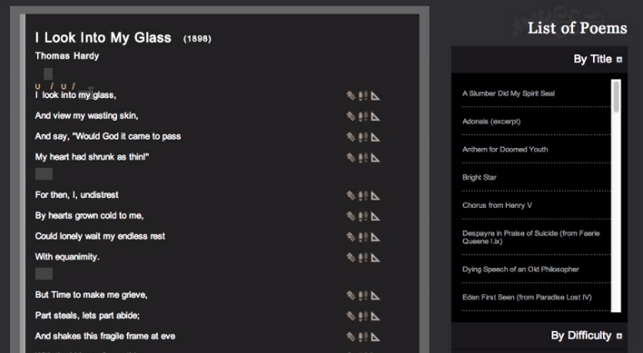

For Better For Verse

Overview
For Better For Verse is an interactive website that teaches scansion and allows students to mark stress, feet, and meter in poetry (and validate their answers). This tool helps students develop scansion skills through interactive scansion exercises online.
Documentation
Suggested Activities
Scansion Practice
After introducing the fundamentals of stress, meter, and rhythm in poetry, have students hone their skills by marking up select poems on the site. Students can submit evidence of their work by printing the page or by taking a screenshot of each completed exercise. Can students effectively identify stress and meter in poetry?
Close Reading
For homework, have students scan a poem using For Better For Verse. Their completed exercise should be coupled with a short paragraph describing their experience with scansion and, more specifically, how the exercise influenced their interpretation of the poem. Invite students to consider how the results of their scansion practice supported, refuted, or complicated their initial thoughts on the poem.
back